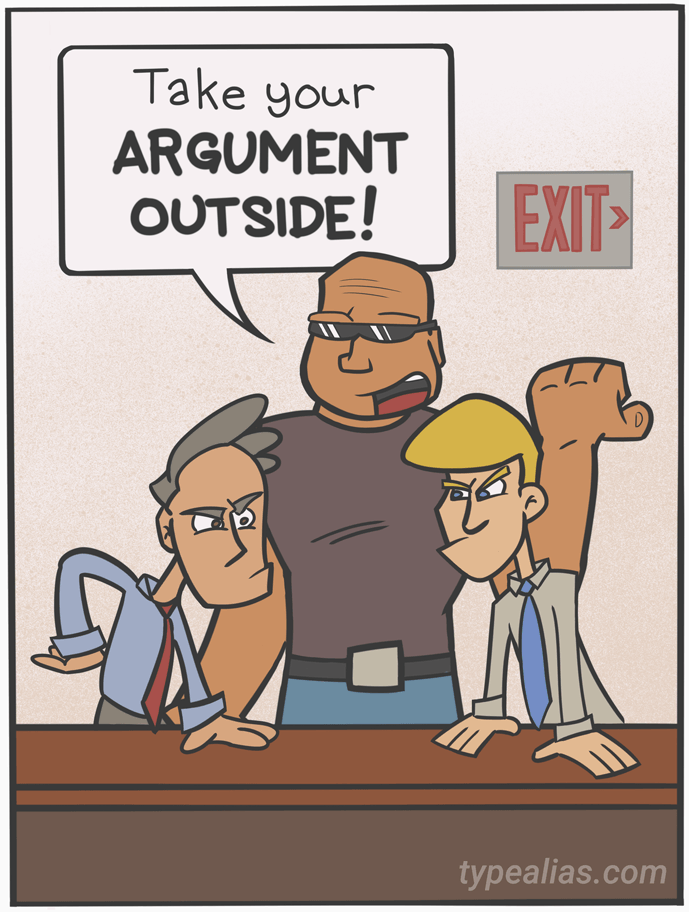

Em JavaScript, uma função é um bloco de código que realiza uma determinada tarefa. Ela é executada quando algo a "chama".
As funções servem, principalmente, para podermos reutilizar o código em diferentes lugares do projeto. Diferentes argumentos têm resultados diferentes.
Para definir uma função, use a palavra-chave function, seguida de um nome (definido pelo desenvolvedor, use algo fácil de lembrar e que se relacione à tarefa que a função executará), de parênteses e de chaves. Os nomes das funções podem conter letras, dígitos, sublinhados e cifrões (mesma regra das variáveis). Os parênteses podem conter nomes de parâmetros, separados por vírgulas. O código a ser executado pela função deve ser colocado entre as chaves:
function nome(parâmetro1, parâmetro2, parâmetro3) {
// código a executar
}
Argumentos são os valores recebidos pela função ao chamá-la, e dentro da função os argumentos (parâmetros) comportam-se como variáveis. Lembre-se:

Este operador chama a função, mas lembre-se que acessar uma função com parâmetros incorretos pode retornar uma resposta incorreta.
O código dentro de uma função será executado quando "algo" chamar a função:
Ao atingir uma declaração return, a função pára de executar. Se uma declaração chamou a função, o JavaScript "retorna" para executar o código após a declaração de chamada.
As funções geralmente calculam um valor de retorno, que "retorna" de volta para o que chamou a função. Exemplo:
// A função é chamada, o valor de retorno será exibido em x
let x = myFunction(4, 3);
function myFunction(a, b) {
// A função retorna o produto de a e b
return a * b;
}
Funções podem ser usadas da mesma forma que as variáveis, em todos os tipos de fórmulas, atribuições e cálculos. Em vez de usar uma variável para armazenar o valor de uma função, é possível usar a função diretamente, como um valor de variável. Por exemplo:
// Em vez disso:
let x = toCelsius(77);
let text = "The temperature is " + x + " Celsius";
// Faça isso:
let text = "The temperature is " + toCelsius(77) + " Celsius";
As variáveis declaradas em uma função JavaScript se tornam locais e só podem ser acessadas dentro da função. Por causa disso, é possível usar variáveis com o mesmo nome em diferentes funções. As variáveis locais são criadas ao iniciar uma função e excluídas após sua conclusão.
Funções de seta simplificam a escrita de códigos de funções, tornando-a mais curta.
// Sem a função de seta:
hello = function() {
return "Hello World!";
}
// Com a função de seta:
hello = () => {
return "Hello World!";
}
E se a função tem apenas uma declaração que retorna um valor, é possível remover também as chaves e a palavra-chave return:
hello = () => "Hello World!";
Os parâmetros podem ser colocados entre os parênteses. E se tivermos apenas um parâmetro, podemos remover também os parênteses:
// Com parênteses:
hello = (val) => "Hello " + val;
// Sem parênteses:
hello = val => "Hello " + val;
Em funções de seta, o comportamento da palavra-chave this também é diferente. Nelas, essa palavra-chave não é vinculada ao objeto que chamou a função, mas sim ao objeto que definiu a função.
Para entender melhor a diferença, veja os exemplos em JavaScript Arrow Functions.